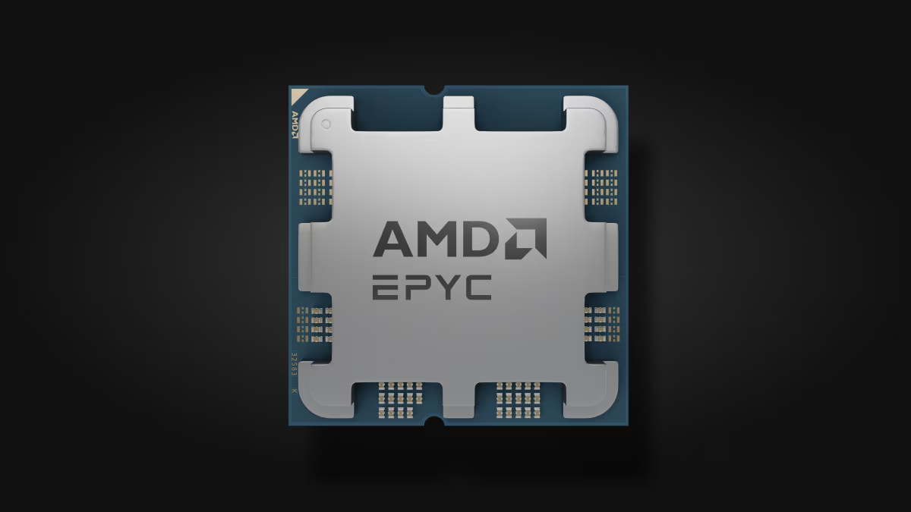

Procesadores de Servidores
Los procesadores de servidores están diseñados para manejar cargas de trabajo intensivas, como bases de datos, virtualización y servicios en la nube. Ofrecen mayor rendimiento, escalabilidad y confiabilidad en comparación con los procesadores de consumo general.

Características principales
- Arquitectura :Diseñados para soportar múltiples núcleos y subprocesos, optimizados para tareas paralelas.
- Memoria :Compatibilidad con grandes cantidades de RAM ECC (Error-Correcting Code) para mayor confiabilidad.
- Rendimiento :Optimizados para cargas de trabajo intensivas, como virtualización y procesamiento de datos.
- Uso :Utilizados en centros de datos, servidores empresariales y aplicaciones en la nube.
Procesadores relevantes para servidores
Algunos de los procesadores más destacados para servidores incluyen:
- Intel Xeon Platinum 8380: Diseñado para centros de datos, ofrece 40 núcleos y soporte para hasta 6 TB de RAM.
- AMD EPYC 7763: Con 64 núcleos y 128 subprocesos, es ideal para virtualización y bases de datos.
- AMD Threadripper PRO 3995WX: Con 64 núcleos y 128 subprocesos, es una opción poderosa para servidores y estaciones de trabajo.
- Intel Xeon Gold 6314U: Ofrece 32 núcleos y es ideal para servidores empresariales.
- AMD EPYC 7H12: Diseñado para alto rendimiento, con 64 núcleos y soporte para PCIe 4.0.
- AMD Threadripper 3970X: Con 32 núcleos y 64 subprocesos, es ideal para servidores de alto rendimiento.
- Intel Xeon W-3275: Ideal para estaciones de trabajo y servidores de alto rendimiento.
- AMD EPYC 7742: Con 64 núcleos, es una opción popular para servidores en la nube.
- AMD Threadripper 3960X: Con 24 núcleos y 48 subprocesos, es una opción equilibrada para servidores.
- AMD Threadripper PRO 5975WX: La última generación de Threadripper, con 32 núcleos y soporte para PCIe 4.0.
Diferencias entre arquitecturas x64 y x99
A continuación, se presenta una tabla comparativa entre las arquitecturas x64 (para servidores generales) y x99 (para servidores de gama alta):
| Característica | x64 | x99 |
|---|---|---|
| Núcleos | Hasta 32 | Hasta 64 o más |
| Memoria RAM soportada | Hasta 2 TB | Hasta 6 TB |
| Uso principal | Servidores empresariales | Centros de datos y supercomputación |
| Rendimiento | Alto | Extremo |
| Precio | Moderado | Alto |
| Energía | Eficiente | Mayor consumo |
Explora más
Si deseas conocer más sobre otros componentes, visita las siguientes páginas: